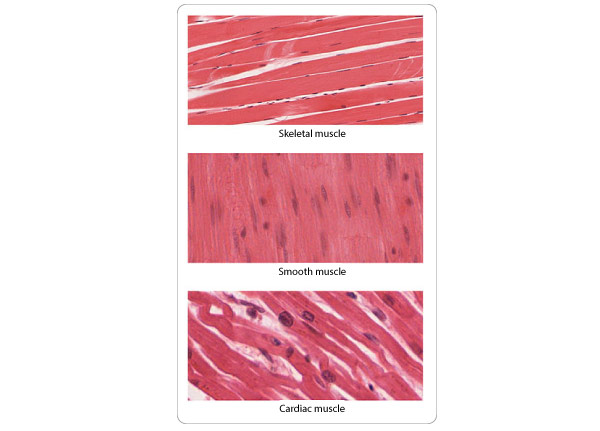
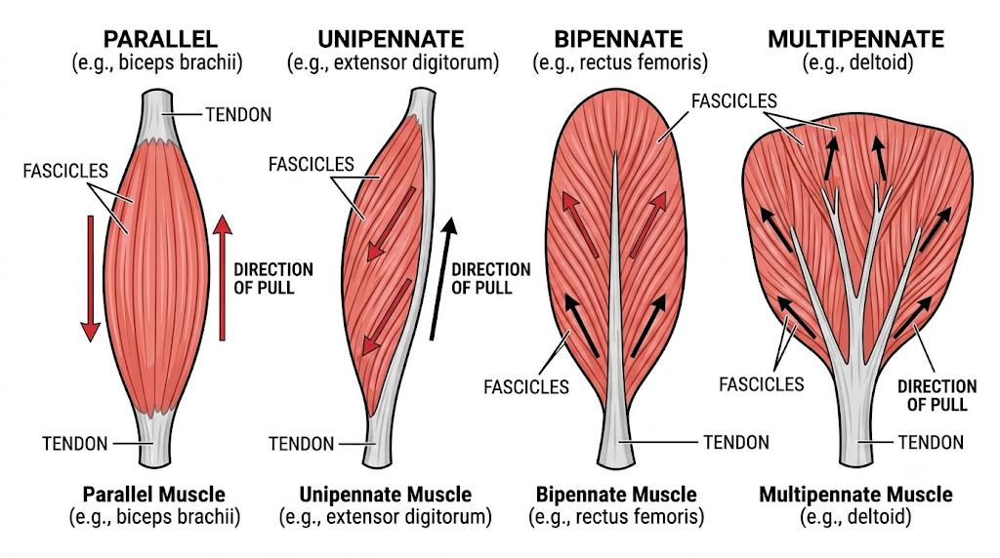
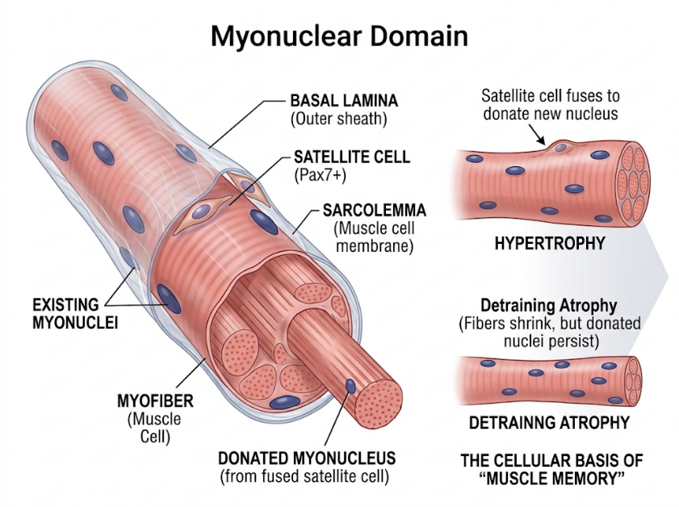

Muscles
General considerations, classification, development, histology and functions of muscles
Definition: Muscle is a contractile tissue
- Contractile elements in the muscle cells brings about change in shape.
- Muscle contraction results in change in tension - generating sites within the muscle fibre
Characteristics of muscle
- Excitability
- Contractility
- Extensibility
- Elasticity
Developmental origin of muscle
- Mesoderm - Majority of muscles including skeletal, cardiac and smooth muscles develop from mesoderm
- Ectoderm - Sphincter pupillae and dilator pupillae of iris develop from ectoderm
- Endoderm - Myoepithelial cells are endodermal in origin
Structural classification of muscles
- Striated muscles
- myosin and actin filaments are organized into regular, repeating elements which give the cells a finely cross-striated appearance
- Skeletal muscle and Cardiac muscle
- Non-Striated muscles
- Smooth muscle
Smooth muscle
- Cells are elongated - spindle shaped with central nucleus
- Derived from mesoderm
- Present in wall of gastrointestinal system, urogenital system, respiratory system, tunica media of vessels, in dermis (arrector pilori), intrinsic muscles of eye, dartos muscle of scrotum.
- Supplied by autonomic nerves
- Involuntary
- Has ability to contract for sustained contraction without fatigue

Figure: types of muscles
Cardiac muscle
- Short branching cells with central nucleus
- Faint striations present
- Present in heart
- Supplied by autonomic nerves
- Involuntary
- Autorhythemic
- Intercalated discs between cells help in fast conduction of impulses
- Specialised cell junctions – gap junctions
- Electrical syncytium
Skeletal muscle
- Separate cylindrical cells forming syncytium (hence multinucleated)
- Peripherally placed nucleus (contractile apparatus pushes the nuclues peripherally)
- Striations are well appreciated
- Alternate dark and light bands
- Each muscle fibre is made of – myofibrils
- Myofibrils composed of myofilaments having actin and myosin proteins
- Supplied by spinal nerves
- Voluntary
- Usually attached to skeleton - hence the name skeletal muscles
Cell membrane and cytoplasmic organelle of muscles are named differently
- Plasma membrane – sarcolemma
- Cytoplasm –sarcoplasm
- Smooth ER – sarcoplasmic reticulum
Connective tissue covering
Epimysium
•Surround entire muscle
Perimysium
•Cover muscle fascicles
Endomysium
•Individual muscle fibres
Terminology - Origin and insertion
Origin - Relatively fixed end
Insertion - Relatively moving end
Tendon
Fibrous connective tissue which attaches muscle
To the bone (not always)
Classification based on action
Slow contracting muscles
Type I
Fast contracting muscles
Type II
Classification based on action
Prime movers – agonists
- Working muscle
Antagonist
- Relaxing muscle
Synergists
- Contracting together
Fixators
- Provide support
Shunt muscles Vs Spurt muscles
A spurt muscle's origin is distant from the joint, but its insertion is close to the joint axis, providing a large rotational/mobility component (accelerating movement), whereas shunt muscles primarily provide a transarticular compressive/stabilizing vector along the moving bone.
Parallel and pennate arrangements
Arrangement | How the fascicles run | Functional advantage | Example |
Parallel | In the general direction of the muscle’s long axis | Long fibres can shorten over a greater distance, allowing greater excursion | Sartorius |
Pennate | Obliquely to the tendon, like the barbs of a feather | More fibres can be packed side by side into a given muscle volume, favouring force production | Rectus femoris |

Tendon and aponeurosis - transmit force generated by muscle
- A tendon is a collagen-rich connective tissue structure that commonly has a cord-like form.
- An aponeurosis is a broad, flat sheet of tendinous tissue that can distribute force across a wide area
Agonist, antagonist, synergist and fixator
These terms describe a muscle’s role in a particular task. Consider lifting a cup towards the mouth by flexing the elbow, with the forearm supinated and the upper arm held at the side.
Role | Meaning | Example during the cup lift |
Agonist | Produces the movement being studied | Brachialis flexes the elbow. |
Antagonist | Can produce the opposing movement | Triceps brachii extends the elbow. It can also help control the movement through co-contraction. |
Synergist | Assists the movement or limits an unwanted action | Biceps brachii assists elbow flexion in this forearm position. |
Fixator | Stabilises a proximal part so the movement can occur from a steady base | Scapular stabilisers, including trapezius and serratus anterior, help steady the scapula against the thorax. |
The distinction between a synergist and a fixator lies in what each contributes to the task. Biceps adds to the pull that bends the elbow. The scapular stabilisers hold the shoulder girdle steady while the forearm moves.
Modern histological and diagnostics distinguishes muscle lineages via lineage-determining transcription factors, structural isoforms, excitation-contraction coupling complexes, and junctional proteins.
Skeletal Muscle as an Endocrine Organ:
- Skeletal muscle is now characterized beyond locomotion as a secretory organ.
- Muscle fibers secrete myokines (e.g., Irisin, Myostatin, IL-15) during contraction, which cross-talk with adipose tissue, liver, bone, and the central nervous system.
Satellite Cell Dynamics & the "Myonuclear Domain" Hypothesis:
- Pax7+ satellite cells reside between the sarcolemma and basal lamina.
- During hypertrophy, satellite cells fuse into existing myofibers to contribute fresh nuclei, maintaining a stable ratio of transcriptional capacity to cytoplasmic volume (the myonuclear domain). Even during detraining atrophy, recruited myonuclei persist long-term, forming the cellular basis of "muscle memory."

Cellular Fusion Machinery:
- The discovery of the transmembrane proteins Myomaker (Tmem8c) and Myomerger/Minion (Gm7325) resolved how skeletal myoblasts physically fuse into a multinucleated syncytium a mechanism absent in cardiac and smooth muscle.
T-Tubule / Sarcoplasmic Reticulum Organization:
- Skeletal Muscle Triads: Located specifically at the A–I band junctions (two triads per sarcomere in mammalian muscle).
- Cardiac Muscle Diads: Located at the Z-disc level (one per sarcomere, wider T-tubules with an external lamina).
Applied Anatomy
Malignant Hyperthermia:
- Mutations in the skeletal ryanodine receptor gene (RYR1) or CACNA1S (CaV1.1) render RyR1 hyper-reactive to volatile anesthetics (halothane, isoflurane) and succinylcholine.
- Uncontrolled, sustained calcium release drives hypermetabolism, rigidity, and lethal hyperpyrexia.
- Dantrolene acts as a specific antidote by binding RyR1 and blocking calcium channel opening.
Catecholaminergic Polymorphic Ventricular Tachycardia:
- Mutations in cardiac RYR2 or cardiac calsequestrin (CASQ2) produce "leaky" channels during adrenergic stress.
- Spontaneous diastolic calcium sparks trigger delayed afterdepolarizations (DADs) via the electrogenic NCX1 (bringing in 3 Na+ for every 1 Ca2+ extruded), culminating in fatal ventricular arrhythmias.
Heart Failure and T-Tubule Remodelling:
- Pathologic cardiac remodelling involves downregulation or loss of Junctophilin-2 (JPH2). This widens the dyadic cleft and causes T-tubule disorganization, mechanically uncoupling CaV1.2 from RyR2.
- The resulting dyssynchronous CICR causes delayed, blunted force development and progressive systolic failure.
Cardiac Myocyte Turnover:
- Carbon-14 dating and lineage tracing demonstrate that adult human cardiomyocytes renew at a low rate (≈0.5-1% per year in early adulthood, decreasing with age), demonstrating that the myocardium is not completely post-mitotic.